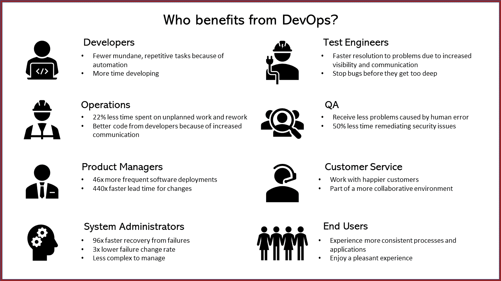
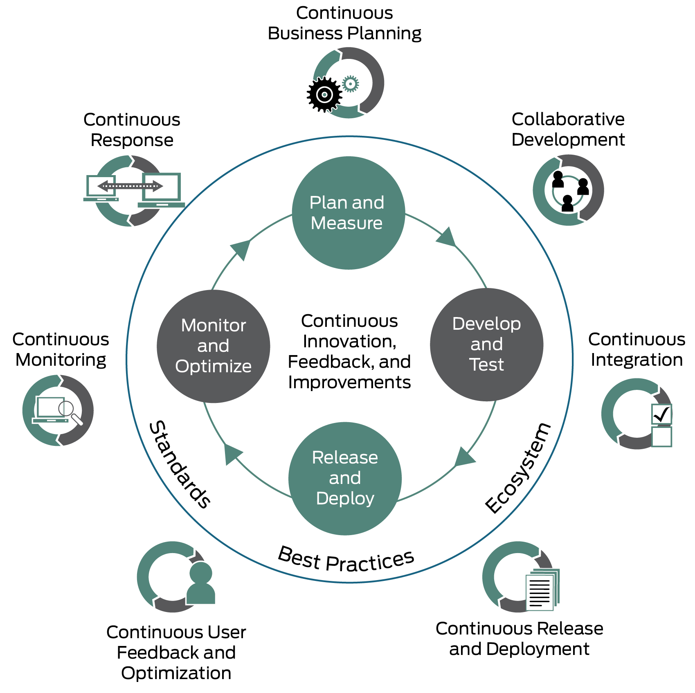

系列目录
1. 介绍
DevOps大概起源于08到09年之间，最初的目的是要打破开发与运维之间的壁垒，2010年，The Agile Admin博客发布了《What is DevOps》给出了一个详细的DevOps定义，算是对DevOps有了一个初步的定义。不过，我这里还是引用一下wiki的定义：
DevOps（开发 Development 与运维 Operations 的组合词）是一种文化、一场运动或实践，强调在自动化软件交付流程及基础设施变更过程中，软件开发人员与其他信息技术（IT）专业人员彼此之间的协作与沟通。它旨在建立一种文化与环境，使构建、测试、软件发布得以快速、频繁以及更加稳定地进行。
2. 优势
传统的瀑布模型会带来很多沟通上的问题和成本，DevOps实际上是要来解决这些问题的。我们分别从工程上和角色上的优势来说一说
2.1 基于DevOps的工程上的优势

DevOps的主要好处是可以更快地交付质量大大提高的软件。 根据行业的不同，可能还会有其他好处。大部分软件工程采用DevOps具有如下优势：
-
提升了可靠性
-
更快速的软件更新
-
减少故障恢复时间
-
更好的用户体验
-
更加高效
-
减少失败
-
降低风险
-
更好的质量
-
更短的开发周期
-
提升产品交付时间
-
提升稳定性
-
节省成本
2.2 基于DevOps的角色上的优势
2.2.1 不同角色的痛苦

在IT角色中，大部分的痛苦都来自于缺乏沟通和无聊的重复工作。 DevOps旨在解决这些问题。
2.2.2 优势

如果采用DevOps后，不同的角色能获得不同的好处：
开发
在没有采用DevOps之前，开发人员可能需要一遍又一遍的完成类似构建和部署的相同的任务。非常消耗时间。
借助DevOps和自动化，可以消除繁琐的重复任务！将这些耗时的项目排除在外，这样就有更多的时间进行开发。
运维
软件开发完成后交由运维人员进行发布维护，但是因为缺少沟通，运维人员不清楚具体的功能和变更，当出现问题时，解决问题将花费更长的时间。也因为这个情况，为了保持环境的稳定性，变更变得小心翼翼。
使用DevOps后，自动化和持续集成允许在不威胁稳定性的情况下交付新功能。这样运维人员报告的计划外的工作和返工时间减少了22%。这主要是因为运维人员与开发人员的交流增加了。 更好的代码、共享的代码库和更稳定的线上环境使工作更加轻松。
产品
当产品和应用需要更长的时间才能投入生产环境时，对于产品经理来说令人难以接受。特别是在软件有错误的时候，时间会更加的长。
而DevOps鼓励协作环境，通过不断的沟通交流，以及小步快跑的方式，软件部署频率提高了46倍，变更准备的时间缩短了440倍！
系统管理员
当软件有错误，但是反馈不及时以及可见性低时，系统管理员就很难进行工作。
而Devops鼓励沟通，沟通可以带来更好的产品和更好的系统，这样可以让管理更简单，并且自动化可以减少人为错误，从而将故障发生的概率降低3倍。
DevOps还可以提高整个软件开发过程的可见性。当能够检测到错误，找到错误的根源并找到原因时，解决问题就变得容易。 DevOps可使故障恢复速度提高96倍。
测试
当测试人员看不到问题的源头和愿意时，就很令人沮丧。
DevOps可以更快地解决问题。提高可见度和沟通对于解决问题至关重要。工程师可以使用实时数据来解决问题并了解应用程序更改的影响。当出现问题时，解决方案实施越早越好。如果错误太深，则将很难修复。
质量保障
确保产品和系统完好无损是质量保障的工作。但这并不意味着大家会喜欢充满错误的软件和流程。
借助DevOps，团队成员可以共同开发出更好的产品，并且自动化可以减少容易避免的人为错误。这样可以让错误更少。在存在错误的地方，由于持续集成和持续交付以及它们的频繁微小更改，它们更小而且更容易被修复。DevOps用户报告的修复安全问题的时间减少了50％，故障恢复速度提高了96倍。
客服
曾经在服务行业工作过的任何人，无论是在餐馆，零售店还是客户服务部门，都知道与心怀不满的客户打交道的痛苦。当您的系统出现故障和错误时，客户也会不满意。
DevOps减少了错误，这意味着更快乐的客户。客服仍然会收到有投诉的客户打来的电话，但是他们之间的联系可能会越来越少。另外，与他们反复遇到相同的问题相比，他们将更加了解。更具协作性的环境意味着您的工作更加轻松。
用户
产品变更的意义是什么？当然是为了改善用户体验。因为我们简化了流程，这就意味着我们将有更多时间为客户和客户进行更多改进。
DevOps通过改进流程和应用程序使最终用户的体验更加一致。总体而言，使交互更加有趣。
3. 如何实施？

要让 DevOps 切实有效，您必须首先建立一套开发人员与运营部门通力协作的文化和理念。这对于该策略能否取得成功至关重要。该策略使得两个团队之间能够进行更好的沟通，从而激发创新。在打破了局限性的组织中，您可以建立一个集成环境。在该环境中，您能够反复测试并改进软件代码，然后实施一套连续发布计划以部署经过增强的软件。
您可以快速交付高质量的新产品和服务，因此客户满意度和用户体验将得到提升。通过使用内置了机器学习和算法的工具来执行连续监控和响应，任务（工作流程）可以自动触发，无需人工干预。
通过收集客户反馈和分析，您可以快速将这些信息融入到您的业务规划和未来产品开发中。然后，您可以从头开始再次启动 DevOps 循环。但这一次，您可以借助从客户那里学习并验证的知识来改进协作开发过程，并开始优化。
通过继续遵循 DevOps 方法，公司可以逐步建立一套优化的生态系统，其中包含相互作用的组件、用于优化开发的优秀实践以及用于维持高质量的既定标准。
DevOps的关键在于持续改进并且循环：
- 持续计划
- 协作开发
- 持续测试
- 持续集成
- 持续交付
- 持续反馈
- 持续监控
- 持续响应
4. 结论
该篇文章，我们介绍了DevOps的定义，说明了采用DevOps后的优势，以及在大方向上要如何进行DevOps的实施。接来下，我们将从技术层面来说明如何构建DevOps。
参考：
https://devops.com/different-organizations-different-devops-outcomes/
https://dzone.com/articles/the-benefits-of-devops-by-role
https://www.juniper.net/cn/zh/products-services/what-is/devops/